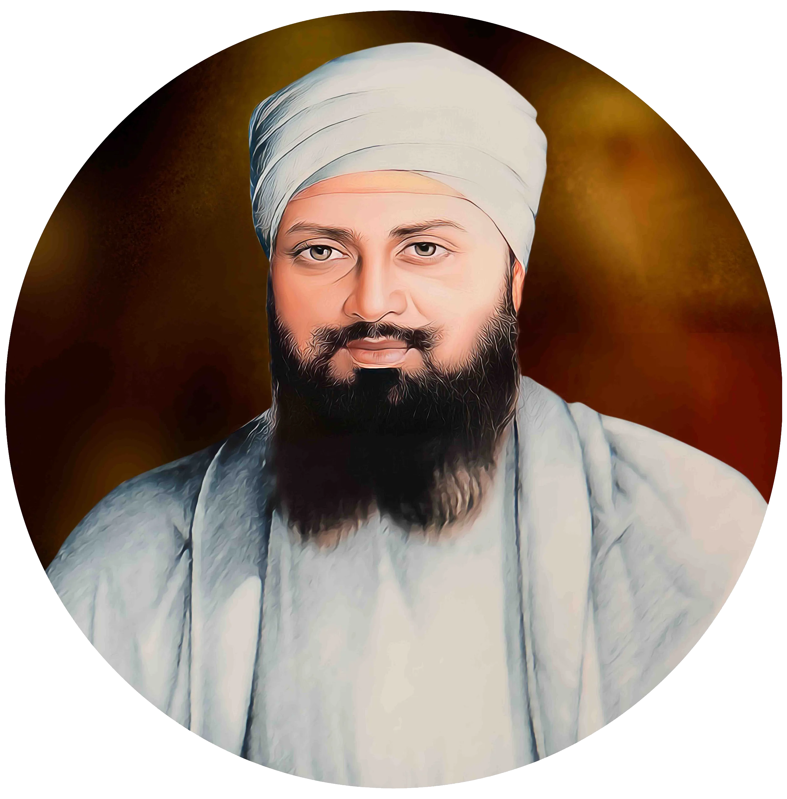

ਗੁਰੂ ਤੇਗ ਬਹਾਦਰ ਜੀ


ਸਿਰਲੇਖ: ਗੁਰੂ ਤੇਗ ਬਹਾਦਰ ਜੀ
ਸ਼੍ਰੇਣੀ: ਧਾਰਮਿਕ ਕੋਨਾ
ਕਲਾਕਾਰ: ਇਤਿਹਾਸਕ ਸ਼ਖਸੀਅਤ
ਸਾਲ: 1621 – 1675
ਸ਼੍ਰੇਣੀ: ਧਾਰਮਿਕ ਕੋਨਾ
ਕਲਾਕਾਰ: ਇਤਿਹਾਸਕ ਸ਼ਖਸੀਅਤ
ਸਾਲ: 1621 – 1675
ਗੁਰੂ ਤੇਗ ਬਹਾਦਰ ਜੀ
ਨੌਵੇਂ ਸਿੱਖ ਗੁਰੂ, ਧਰਮ ਦੀ ਚਾਦਰ ਸ੍ਰੀ ਗੁਰੂ ਤੇਗ ਬਹਾਦਰ ਜੀ ਦਾ ਜਨਮ 1 ਅਪ੍ਰੈਲ 1621 ਨੂੰ ਗੁਰੂ ਕੇ ਮਹਿਲ (ਅੰਮ੍ਰਿਤਸਰ) ਵਿਖੇ ਛੇਵੇਂ ਗੁਰੂ ਹਰਿਗੋਬਿੰਦ ਸਾਹਿਬ ਜੀ ਅਤੇ ਮਾਤਾ ਨਾਨਕੀ ਜੀ ਦੇ ਗ੍ਰਹਿ ਵਿਖੇ ਹੋਇਆ। ਕਰਤਾਰਪੁਰ ਦੀ ਜੰਗ ਵਿੱਚ ਸ਼ਾਨਦਾਰ ਤਲਵਾਰਬਾਜ਼ੀ ਵੇਖ ਕੇ ਪਿਤਾ ਜੀ ਨੇ ਆਪ ਜੀ ਦਾ ਨਾਮ 'ਤੇਗ ਬਹਾਦਰ' (ਤਲਵਾਰ ਦੇ ਧਨੀ) ਰੱਖਿਆ। ਆਪ ਜੀ ਤਿਆਗ ਅਤੇ ਭਗਤੀ ਦੀ ਮੂਰਤ ਸਨ। ਆਪ ਜੀ ਨੇ ਅਨੰਦਪੁਰ ਸਾਹਿਬ ਨਗਰ ਵਸਾਇਆ ਅਤੇ ਅਸਾਮ, ਬੰਗਾਲ ਤੇ ਬਿਹਾਰ ਤੱਕ ਧਰਮ ਪ੍ਰਚਾਰ ਕੀਤਾ, ਜਿੱਥੇ ਪਟਨਾ ਸਾਹਿਬ ਵਿਖੇ ਆਪ ਜੀ ਦੇ ਸਪੁੱਤਰ ਗੋਬਿੰਦ ਰਾਇ (ਗੁਰੂ ਗੋਬਿੰਦ ਸਿੰਘ ਜੀ) ਦਾ ਪ੍ਰਕਾਸ਼ ਹੋਇਆ।
ਜਦੋਂ ਮੁਗ਼ਲ ਬਾਦਸ਼ਾਹ ਔਰੰਗਜ਼ੇਬ ਨੇ ਗ਼ੈਰ-ਮੁਸਲਮਾਨਾਂ 'ਤੇ ਜਬਰੀ ਧਰਮ ਪਰਿਵਰਤਨ ਦਾ ਜ਼ੁਲਮ ਸ਼ੁਰੂ ਕੀਤਾ, ਤਾਂ ਪੰਡਿਤ ਕ੍ਰਿਪਾ ਰਾਮ ਦੀ ਅਗਵਾਈ ਵਿੱਚ ਕਸ਼ਮੀਰੀ ਪੰਡਿਤ ਅਨੰਦਪੁਰ ਸਾਹਿਬ ਗੁਰੂ ਜੀ ਦੀ ਸ਼ਰਨ ਆਏ। ਗੁਰੂ ਸਾਹਿਬ ਨੇ ਮਨੁੱਖੀ ਆਜ਼ਾਦੀ ਅਤੇ ਧਾਰਮਿਕ ਵਿਸ਼ਵਾਸ ਦੀ ਰੱਖਿਆ ਲਈ ਆਪਣੀ ਮਹਾਨ ਕੁਰਬਾਨੀ ਦੇਣ ਦਾ ਸੰਕਲਪ ਲਿਆ। ਦਿੱਲੀ ਵਿਖੇ ਗੁਰੂ ਜੀ ਦੇ ਅਨਿਨ ਸਿੱਖਾਂ—ਭਾਈ ਮਤੀ ਦਾਸ, ਭਾਈ ਸਤੀ ਦਾਸ ਅਤੇ ਭਾਈ ਦਿਆਲਾ ਜੀ ਨੂੰ ਸ਼ਹੀਦ ਕੀਤਾ ਗਿਆ। 11 ਨਵੰਬਰ 1675 ਨੂੰ ਚਾਂਦਨੀ ਚੌਕ ਵਿਖੇ ਗੁਰੂ ਤੇਗ ਬਹਾਦਰ ਜੀ ਦਾ ਸੀਸ ਕਲਮ ਕਰਕੇ ਸ਼ਹੀਦ ਕੀਤਾ ਗਿਆ। ਭਾਈ ਜੈਤਾ ਜੀ ਸੀਸ ਅਨੰਦਪੁਰ ਸਾਹਿਬ ਲੈ ਗਏ ਅਤੇ ਲੱਖੀ ਸ਼ਾਹ ਵਣਜਾਰਾ ਜੀ ਨੇ ਆਪਣੇ ਘਰ ਨੂੰ ਅਗਨ ਭੇਟ ਕਰਕੇ ਧੜ ਦਾ ਸਸਕਾਰ ਕੀਤਾ। ਇਹ ਅਸਥਾਨ ਅੱਜ 'ਗੁਰਦੁਆਰਾ ਸੀਸ ਗੰਜ' ਅਤੇ 'ਗੁਰਦੁਆਰਾ ਰਕਾਬ ਗੰਜ' ਵਜੋਂ ਸੁਸ਼ੋਭਿਤ ਹਨ।
'ਭੈ ਕਾਹੂ ਕਉ ਦੇਤ ਨਹਿ ਨਹਿ ਭੈ ਮਾਨਤ ਆਨ॥ ਕਹੁ ਨਾਨਕ ਸੁਨਿ ਰੇ ਮਨਾ ਗਿਆਨੀ ਤਾਹਿ ਬਖਾਨਿ॥'
(ਜੋ ਨਾ ਕਿਸੇ ਨੂੰ ਡਰਾਉਂਦਾ ਹੈ ਅਤੇ ਨਾ ਕਿਸੇ ਤੋਂ ਡਰਦਾ ਹੈ, ਹੇ ਮਨ! ਉਸ ਨੂੰ ਹੀ ਅਸਲ ਗਿਆਨੀ ਜਾਣੋ।)
— ਸ੍ਰੀ ਗੁਰੂ ਤੇਗ ਬਹਾਦਰ ਜੀ (ਸਲੋਕ ਮਃ ੯)
ਨੌਵੇਂ ਸਿੱਖ ਗੁਰੂ, ਧਰਮ ਦੀ ਚਾਦਰ ਸ੍ਰੀ ਗੁਰੂ ਤੇਗ ਬਹਾਦਰ ਜੀ ਦਾ ਜਨਮ 1 ਅਪ੍ਰੈਲ 1621 ਨੂੰ ਗੁਰੂ ਕੇ ਮਹਿਲ (ਅੰਮ੍ਰਿਤਸਰ) ਵਿਖੇ ਛੇਵੇਂ ਗੁਰੂ ਹਰਿਗੋਬਿੰਦ ਸਾਹਿਬ ਜੀ ਅਤੇ ਮਾਤਾ ਨਾਨਕੀ ਜੀ ਦੇ ਗ੍ਰਹਿ ਵਿਖੇ ਹੋਇਆ। ਕਰਤਾਰਪੁਰ ਦੀ ਜੰਗ ਵਿੱਚ ਸ਼ਾਨਦਾਰ ਤਲਵਾਰਬਾਜ਼ੀ ਵੇਖ ਕੇ ਪਿਤਾ ਜੀ ਨੇ ਆਪ ਜੀ ਦਾ ਨਾਮ 'ਤੇਗ ਬਹਾਦਰ' (ਤਲਵਾਰ ਦੇ ਧਨੀ) ਰੱਖਿਆ। ਆਪ ਜੀ ਤਿਆਗ ਅਤੇ ਭਗਤੀ ਦੀ ਮੂਰਤ ਸਨ। ਆਪ ਜੀ ਨੇ ਅਨੰਦਪੁਰ ਸਾਹਿਬ ਨਗਰ ਵਸਾਇਆ ਅਤੇ ਅਸਾਮ, ਬੰਗਾਲ ਤੇ ਬਿਹਾਰ ਤੱਕ ਧਰਮ ਪ੍ਰਚਾਰ ਕੀਤਾ, ਜਿੱਥੇ ਪਟਨਾ ਸਾਹਿਬ ਵਿਖੇ ਆਪ ਜੀ ਦੇ ਸਪੁੱਤਰ ਗੋਬਿੰਦ ਰਾਇ (ਗੁਰੂ ਗੋਬਿੰਦ ਸਿੰਘ ਜੀ) ਦਾ ਪ੍ਰਕਾਸ਼ ਹੋਇਆ।
ਜਦੋਂ ਮੁਗ਼ਲ ਬਾਦਸ਼ਾਹ ਔਰੰਗਜ਼ੇਬ ਨੇ ਗ਼ੈਰ-ਮੁਸਲਮਾਨਾਂ 'ਤੇ ਜਬਰੀ ਧਰਮ ਪਰਿਵਰਤਨ ਦਾ ਜ਼ੁਲਮ ਸ਼ੁਰੂ ਕੀਤਾ, ਤਾਂ ਪੰਡਿਤ ਕ੍ਰਿਪਾ ਰਾਮ ਦੀ ਅਗਵਾਈ ਵਿੱਚ ਕਸ਼ਮੀਰੀ ਪੰਡਿਤ ਅਨੰਦਪੁਰ ਸਾਹਿਬ ਗੁਰੂ ਜੀ ਦੀ ਸ਼ਰਨ ਆਏ। ਗੁਰੂ ਸਾਹਿਬ ਨੇ ਮਨੁੱਖੀ ਆਜ਼ਾਦੀ ਅਤੇ ਧਾਰਮਿਕ ਵਿਸ਼ਵਾਸ ਦੀ ਰੱਖਿਆ ਲਈ ਆਪਣੀ ਮਹਾਨ ਕੁਰਬਾਨੀ ਦੇਣ ਦਾ ਸੰਕਲਪ ਲਿਆ। ਦਿੱਲੀ ਵਿਖੇ ਗੁਰੂ ਜੀ ਦੇ ਅਨਿਨ ਸਿੱਖਾਂ—ਭਾਈ ਮਤੀ ਦਾਸ, ਭਾਈ ਸਤੀ ਦਾਸ ਅਤੇ ਭਾਈ ਦਿਆਲਾ ਜੀ ਨੂੰ ਸ਼ਹੀਦ ਕੀਤਾ ਗਿਆ। 11 ਨਵੰਬਰ 1675 ਨੂੰ ਚਾਂਦਨੀ ਚੌਕ ਵਿਖੇ ਗੁਰੂ ਤੇਗ ਬਹਾਦਰ ਜੀ ਦਾ ਸੀਸ ਕਲਮ ਕਰਕੇ ਸ਼ਹੀਦ ਕੀਤਾ ਗਿਆ। ਭਾਈ ਜੈਤਾ ਜੀ ਸੀਸ ਅਨੰਦਪੁਰ ਸਾਹਿਬ ਲੈ ਗਏ ਅਤੇ ਲੱਖੀ ਸ਼ਾਹ ਵਣਜਾਰਾ ਜੀ ਨੇ ਆਪਣੇ ਘਰ ਨੂੰ ਅਗਨ ਭੇਟ ਕਰਕੇ ਧੜ ਦਾ ਸਸਕਾਰ ਕੀਤਾ। ਇਹ ਅਸਥਾਨ ਅੱਜ 'ਗੁਰਦੁਆਰਾ ਸੀਸ ਗੰਜ' ਅਤੇ 'ਗੁਰਦੁਆਰਾ ਰਕਾਬ ਗੰਜ' ਵਜੋਂ ਸੁਸ਼ੋਭਿਤ ਹਨ।
'ਭੈ ਕਾਹੂ ਕਉ ਦੇਤ ਨਹਿ ਨਹਿ ਭੈ ਮਾਨਤ ਆਨ॥ ਕਹੁ ਨਾਨਕ ਸੁਨਿ ਰੇ ਮਨਾ ਗਿਆਨੀ ਤਾਹਿ ਬਖਾਨਿ॥'
(ਜੋ ਨਾ ਕਿਸੇ ਨੂੰ ਡਰਾਉਂਦਾ ਹੈ ਅਤੇ ਨਾ ਕਿਸੇ ਤੋਂ ਡਰਦਾ ਹੈ, ਹੇ ਮਨ! ਉਸ ਨੂੰ ਹੀ ਅਸਲ ਗਿਆਨੀ ਜਾਣੋ।)
— ਸ੍ਰੀ ਗੁਰੂ ਤੇਗ ਬਹਾਦਰ ਜੀ (ਸਲੋਕ ਮਃ ੯)
ਮੋਬਾਈਲ 'ਤੇ ਖੋਲ੍ਹੋ
ਆਪਣੇ ਫ਼ੋਨ 'ਤੇ ਇਸ ਕਲਾ ਰਿਕਾਰਡ ਨੂੰ ਦੇਖਣ ਲਈ ਸਕੈਨ ਕਰੋ।